Aplicações de Álgebra Linear#
import numpy as np
import matplotlib.pyplot as plt
import scipy.linalg as la
Interpolação Polinomial#
A interpolação polinomial encontra o polinômio único de grau \(n\) que passa por \(n+1\) pontos no plano \(xy\). Por exemplo, dois pontos no plano \(xy\) determinam uma reta e três pontos determinam uma parábola.
Formulação#
Suponha que tenhamos \(n + 1\) pontos no plano \(xy\)
tal que todos os valores de \(x\) sejam distintos (\(x_i \not= x_j\) para \(i \not= j\)). A forma geral de um polinômio de grau \(n\) é
Se \(p(x)\) é o único polinômio de grau \(n\) que interpola todos os pontos, então os coeficientes \(a_0\), \(a_1\), \(\dots\), \(a_n\) satisfazem as seguintes equações:
Portanto, o vetor de coeficientes
é a solução única do sistema linear de equações
onde \(X\) é a matriz de Vandermonde e \(\mathbf{y}\) é o vetor de valores de \(y\)
Exemplos#
Parábola Simples
Vamos fazer um exemplo simples. Sabemos que \(y=x^2\) é o único polinômio de grau 2 que interpola os pontos \((-1,1)\), \((0,0)\) e \((1,1)\). Vamos calcular a interpolação polinomial desses pontos e verificar o resultado esperado \(a_0=0\), \(a_1=0\) e \(a_2=1\).
Crie a matriz de Vandermonde \(X\) com o array de valores de \(x\):
x = np.array([-1,0,1])
X = np.column_stack([[1,1,1],x,x**2])
print(X)
[[ 1 -1 1]
[ 1 0 0]
[ 1 1 1]]
Crie o vetor \(\mathbf{y}\) de valores de \(y\):
y = np.array([1,0,1]).reshape(3,1)
print(y)
[[1]
[0]
[1]]
Esperamos a solução \(\mathbf{a} = [0,0,1]^T\):
a = la.solve(X,y)
print(a)
[[0.]
[0.]
[1.]]
Sucesso!
Outra Parábola
A interpolação polinomial de 3 pontos \((x_0,y_0)\), \((x_1,y_1)\) e \((x_2,y_2)\) é a parábola \(p(x) = a_0 + a_1x + a_2x^2\) tal que os coeficientes satisfazem
Vamos encontrar a interpolação polinomial dos pontos \((0,6)\), \((3,1)\) e \((8,2)\).
Crie a matriz de Vandermonde \(X\):
x = np.array([0,3,8])
X = np.column_stack([[1,1,1],x,x**2])
print(X)
[[ 1 0 0]
[ 1 3 9]
[ 1 8 64]]
E o vetor de valores de \(y\):
y = np.array([6,1,2]).reshape(3,1)
print(y)
[[6]
[1]
[2]]
Calcule o vetor \(\mathbf{a}\) de coeficientes:
a = la.solve(X,y)
print(a)
[[ 6. ]
[-2.36666667]
[ 0.23333333]]
E plote o resultado:
xs = np.linspace(0,8,20)
ys = a[0] + a[1]*xs + a[2]*xs**2
plt.plot(xs,ys,x,y,'b.',ms=20)
plt.show()
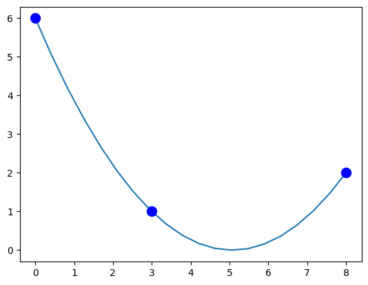
Sobreajuste (Overfitting) de 10 Pontos Aleatórios
Agora vamos interpolar pontos com \(x_i=i\), \(i=0,\dots,9\), e 10 inteiros aleatórios amostrados de \([0,10)\) como valores de \(y\):
N = 10
x = np.arange(0,N)
y = np.random.randint(0,10,N)
plt.plot(x,y,'r.')
plt.show()
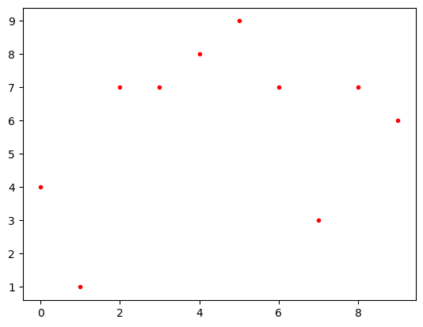
Crie a matriz de Vandermonde e verifique as primeiras 5 linhas e colunas:
X = np.column_stack([x**k for k in range(0,N)])
print(X[:5,:5])
[[ 1 0 0 0 0]
[ 1 1 1 1 1]
[ 1 2 4 8 16]
[ 1 3 9 27 81]
[ 1 4 16 64 256]]
Poderíamos também usar a função do NumPy numpy.vander. Especificamos a opção increasing=True para que as potências de \(x_i\) aumentem da esquerda para a direita:
X = np.vander(x,increasing=True)
print(X[:5,:5])
[[ 1 0 0 0 0]
[ 1 1 1 1 1]
[ 1 2 4 8 16]
[ 1 3 9 27 81]
[ 1 4 16 64 256]]
Resolva o sistema linear:
a = la.solve(X,y)
Plote a interpolação:
xs = np.linspace(0,N-1,200)
ys = sum([a[k]*xs**k for k in range(0,N)])
plt.plot(x,y,'r.',xs,ys)
plt.show()
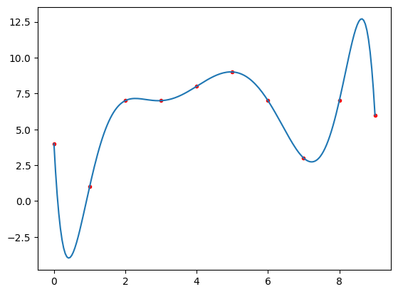
Sucesso! Mas note como a curva é instável. É por isso que é melhor usar uma spline cúbica para interpolar um grande número de pontos.
No entanto, dados da vida real geralmente são muito ruidosos e a interpolação não é a melhor ferramenta para ajustar uma linha aos dados. Em vez disso, gostaríamos de pegar um polinômio de grau menor (como uma reta) e ajustá-lo o melhor possível sem interpolar os pontos.
Regressão Linear por Mínimos Quadrados#
Suponha que tenhamos \(n+1\) pontos
no plano \(xy\) e queremos ajustar uma reta
que «melhor se ajuste» aos dados. Existem diferentes maneiras de quantificar o que «melhor ajuste» significa, mas o método mais comum é chamado de regressão linear por mínimos quadrados. Na regressão linear por mínimos quadrados, queremos minimizar a soma dos erros quadrados
Formulação#
Se formarmos as matrizes
então a soma dos erros quadrados pode ser expressa como
Teorema. (Regressão Linear por Mínimos Quadrados) Considere \(n+1\) pontos
no plano \(xy\). Os coeficientes \(\mathbf{a} = [a_0,a_1]^T\) que minimizam a soma dos erros quadrados
é a solução única do sistema
Esboço da Prova. O produto \(X\mathbf{a}\) está no espaço das colunas de \(X\). A linha que conecta \(\mathbf{y}\) ao ponto mais próximo no espaço das colunas de \(X\) é perpendicular ao espaço das colunas de \(X\). Portanto
e então
Exemplos#
Dados Lineares Ruidosos Falsos
Vamos fazer um exemplo com alguns dados falsos. Vamos construir um conjunto de pontos aleatórios com base no modelo
para alguma escolha arbitrária de \(a_0\) e \(a_1\). O fator \(\epsilon\) representa algum ruído aleatório que modelamos usando a distribuição normal. Podemos gerar números aleatórios amostrados da distribuição normal padrão usando a função do NumPy numpy.random.randn.
O objetivo é demonstrar que podemos usar a regressão linear para recuperar os coeficientes \(a_0\) e \(a_1\) a partir do cálculo da regressão linear.
a0 = 2
a1 = 3
N = 100
x = np.random.rand(100)
noise = 0.1*np.random.randn(100)
y = a0 + a1*x + noise
plt.scatter(x,y);
plt.show()
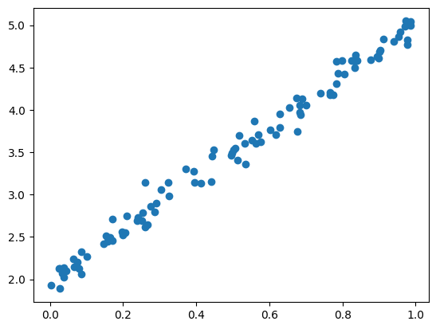
Vamos usar a regressão linear para recuperar os coeficientes \(a_0\) e \(a_1\). Construa a matriz \(X\):
X = np.column_stack([np.ones(N),x])
print(X.shape)
(100, 2)
Vamos olhar para as primeiras 5 linhas de \(X\) para ver se está no formato correto:
X[:5,:]
array([[1. , 0.25421897],
[1. , 0.15751215],
[1. , 0.02420225],
[1. , 0.8329492 ],
[1. , 0.6285462 ]])
Use scipy.linalg.solve para resolver \(\left(X^T X\right)\mathbf{a} = \left(X^T\right)\mathbf{y}\) para \(\mathbf{a}\):
a = la.solve(X.T @ X, X.T @ y)
print(a)
[1.98547745 3.02689019]
Recuperamos os coeficientes do modelo quase que exatamente! Vamos plotar os pontos de dados aleatórios com a regressão linear que acabamos de calcular.
xs = np.linspace(0,1,10)
ys = a[0] + a[1]*xs
plt.plot(xs,ys,'r',linewidth=4)
plt.scatter(x,y);
plt.show()
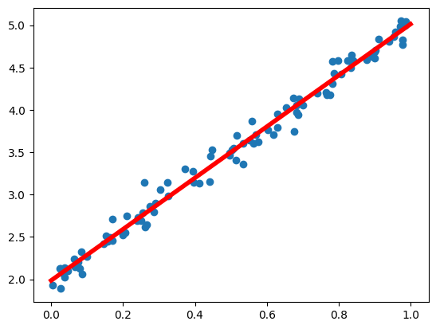
Dados Reais de Kobe Bryant
Vamos trabalhar com alguns dados reais. Kobe Bryant se aposentou em 2016 com 33.643 pontos totais, que é o terceiro maior total de pontos na história da NBA. Quantos anos a mais Kobe Bryant teria que ter jogado para passar o recorde de 38.387 pontos de Kareem Abdul-Jabbar?
O auge de Kobe Bryant foi a temporada 2005-2006 da NBA. Vamos olhar para o total de jogos disputados e pontos por jogo de Kobe Bryant de 2006 a 2016.
years = np.array([2006, 2007, 2008, 2009, 2010, 2011, 2012, 2013, 2014, 2015, 2016])
games = [80,77,82,82,73,82,58,78,6,35,66]
points = np.array([35.4,31.6,28.3,26.8,27,25.3,27.9,27.3,13.8,22.3,17.6])
fig = plt.figure(figsize=(12,10))
axs = fig.subplots(2,1,sharex=True)
axs[0].plot(years,points,'b.',ms=15)
axs[0].set_title('Kobe Bryant, Pontos por Jogo')
axs[0].set_ylim([0,40])
axs[0].grid(True)
axs[1].bar(years,games)
axs[1].set_title('Kobe Bryant, Jogos Disputados')
axs[1].set_ylim([0,100])
axs[1].grid(True)
plt.show()
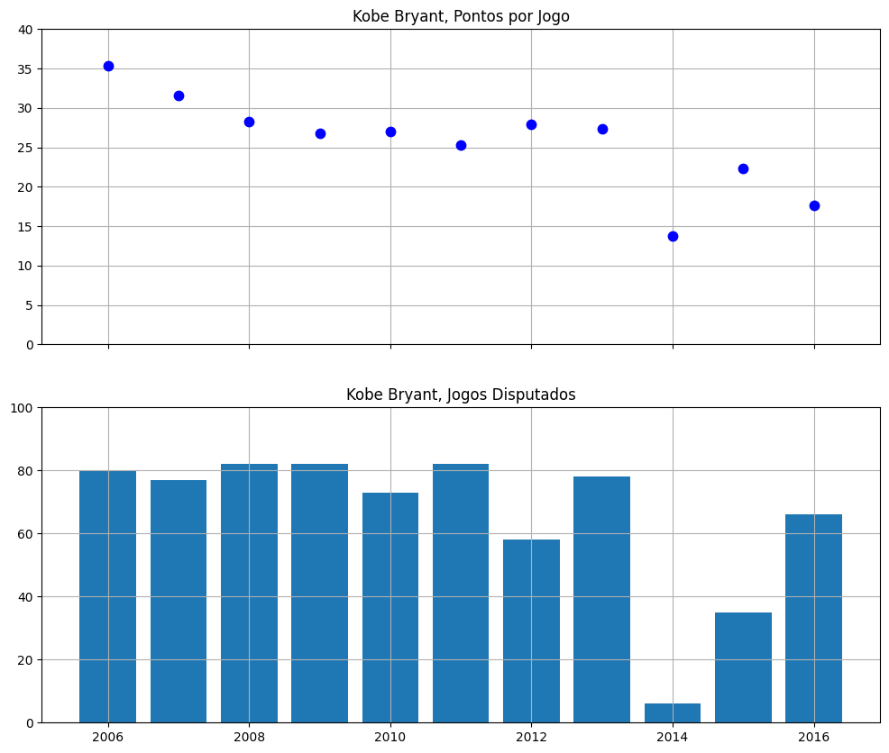
Kobe esteve contundido durante a maior parte da temporada 2013-2014 da NBA e jogou apenas 6 partidas. Este é um outlier e, portanto, podemos descartar este ponto de dados:
years = np.array([2006, 2007, 2008, 2009, 2010, 2011, 2012, 2013, 2015, 2016])
games = np.array([80,77,82,82,73,82,58,78,35,66])
points = np.array([35.4,31.6,28.3,26.8,27,25.3,27.9,27.3,22.3,17.6])
Vamos calcular a média de jogos disputados por temporada durante este período:
avg_games_per_year = np.mean(games)
print(avg_games_per_year)
71.3
Calcule o modelo linear para pontos por jogo:
X = np.column_stack([np.ones(len(years)),years])
a = la.solve(X.T @ X, X.T @ points)
model = a[0] + a[1]*years
plt.plot(years,model,years,points,'b.',ms=15)
plt.title('Kobe Bryant, Pontos por Jogo')
plt.ylim([0,40])
plt.grid(True)
plt.show()
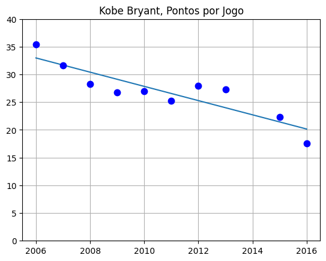
Agora podemos extrapolar para anos futuros e multiplicar pontos por jogo por jogos por temporada e calcular a soma cumulativa para ver os pontos totais de Kobe:
future_years = np.array([2017,2018,2019,2020,2021])
future_points = (a[0] + a[1]*future_years)*avg_games_per_year
total_points = 33643 + np.cumsum(future_points)
kareem = 38387*np.ones(len(future_years))
plt.plot(future_years,total_points,future_years,kareem)
plt.grid(True)
plt.xticks(future_years)
plt.title('Previsão de Pontos Totais de Kobe Bryant')
plt.show()
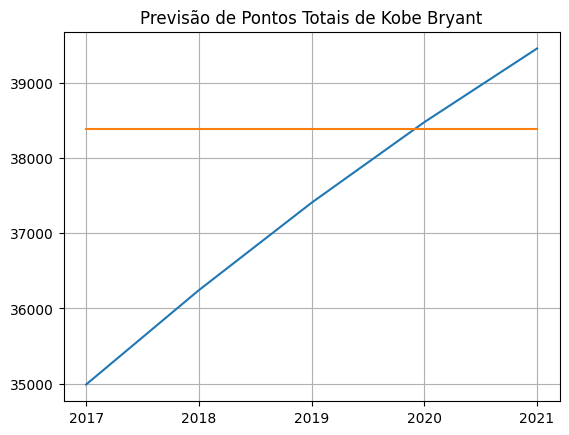
Apenas mais 4 anos!
Regressão Polinomial#
Formulação#
A mesma ideia funciona para ajustar um modelo polinomial de grau \(d\)
a um conjunto de \(n+1\) pontos de dados
Formamos as matrizes como antes, mas agora a matriz de Vandermonde \(X\) tem \(d+1\) colunas
Os coeficientes \(\mathbf{a} = [a_0,a_1,a_2,\dots,a_d]^T\) que minimizam a soma dos erros quadrados \(SSE\) é a solução única do sistema linear
Exemplo#
Dados Quadráticos Ruidosos Falsos
Vamos construir alguns dados falsos usando um modelo quadrático \(y = a_0 + a_1x + a_2x^2 + \epsilon\) e usar a regressão linear para recuperar os coeficientes \(a_0\), \(a_1\) e \(a_2\).
a0 = 3
a1 = 5
a2 = 8
N = 1000
x = 2*np.random.rand(N) - 1 # Números aleatórios no intervalo (-1,1)
noise = np.random.randn(N)
y = a0 + a1*x + a2*x**2 + noise
plt.scatter(x,y,alpha=0.5,lw=0);
plt.show()
Construa a matriz \(X\):
X = np.column_stack([np.ones(N),x,x**2])
Use scipy.linalg.solve para resolver \(\left( X^T X \right) \mathbf{a} = \left( X^T \right) \mathbf{y}\):
a = la.solve((X.T @ X),X.T @ y)
Plote o resultado:
xs = np.linspace(-1,1,20)
ys = a[0] + a[1]*xs + a[2]*xs**2
plt.plot(xs,ys,'r',linewidth=4)
plt.scatter(x,y,alpha=0.5,lw=0)
plt.show()
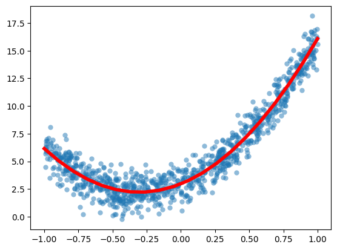
Teoria dos Grafos#
Um grafo é um conjunto de vértices e um conjunto de arestas conectando alguns dos vértices. Consideraremos grafos simples, não direcionados e conexos:
um grafo é simples se não há laços ou múltiplas arestas entre os vértices
um grafo é não direcionado se as arestas não têm uma orientação
um grafo é conexo se cada vértice está conectado a todos os outros vértices no grafo por um caminho
Podemos visualizar um grafo como um conjunto de vértices e arestas e responder a perguntas sobre o grafo apenas olhando para ele. No entanto, isso se torna muito mais difícil com grafos grandes, como um grafo de rede social. Em vez disso, construímos matrizes a partir do grafo, como a matriz de adjacência e a matriz Laplaciana e estudamos suas propriedades.
A teoria espectral de grafos é o estudo dos autovalores da matriz de adjacência (e outras matrizes associadas) e as relações com a estrutura de \(G\).
NetworkX#
Vamos usar o pacote Python NetworkX para construir e visualizar alguns grafos simples.
import networkx as nx
Matriz de Adjacência#
A matriz de adjacência \(A_G\) de um grafo \(G\) com \(n\) vértices é a matriz quadrada de tamanho \(n\) tal que \(A_{i,j} = 1\) se os vértices \(i\) e \(j\) estão conectados por uma aresta, e \(A_{i,j} = 0\) caso contrário.
Podemos usar o networkx para criar a matriz de adjacência de um grafo \(G\). A função nx.adjacency_matrix retorna uma matriz esparsa e a convertemos para um array NumPy regular usando o método todense.
Por exemplo, plote o grafo completo com 5 vértices e calcule a matriz de adjacência:
G = nx.complete_graph(5)
nx.draw(G,with_labels=True)
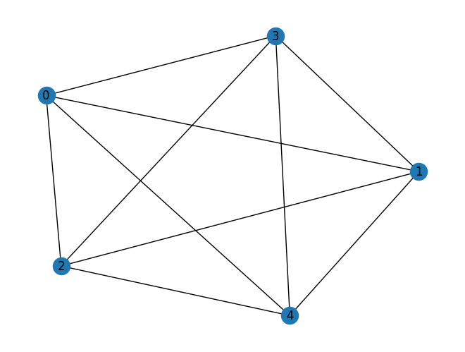
A = nx.adjacency_matrix(G).todense()
print(A)
[[0 1 1 1 1]
[1 0 1 1 1]
[1 1 0 1 1]
[1 1 1 0 1]
[1 1 1 1 0]]
Comprimento do Caminho Mais Curto#
O comprimento do caminho mais curto entre vértices em um grafo simples e não direcionado \(G\) pode ser facilmente calculado a partir da matriz de adjacência \(A_G\). Em particular, o comprimento do caminho mais curto do vértice \(i\) para o vértice \(j\) (\(i\not=j\)) é o menor inteiro positivo \(k\) tal que \((A^k)_{i,j} \not= 0\).
Plote o grafo dodecaédrico:
G = nx.dodecahedral_graph()
nx.draw(G,with_labels=True)
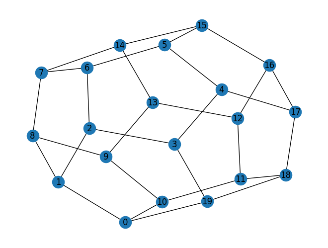
A = nx.adjacency_matrix(G).todense()
print(A)
[[0 1 0 0 0 0 0 0 0 0 1 0 0 0 0 0 0 0 0 1]
[1 0 1 0 0 0 0 0 1 0 0 0 0 0 0 0 0 0 0 0]
[0 1 0 1 0 0 1 0 0 0 0 0 0 0 0 0 0 0 0 0]
[0 0 1 0 1 0 0 0 0 0 0 0 0 0 0 0 0 0 0 1]
[0 0 0 1 0 1 0 0 0 0 0 0 0 0 0 0 0 1 0 0]
[0 0 0 0 1 0 1 0 0 0 0 0 0 0 0 1 0 0 0 0]
[0 0 1 0 0 1 0 1 0 0 0 0 0 0 0 0 0 0 0 0]
[0 0 0 0 0 0 1 0 1 0 0 0 0 0 1 0 0 0 0 0]
[0 1 0 0 0 0 0 1 0 1 0 0 0 0 0 0 0 0 0 0]
[0 0 0 0 0 0 0 0 1 0 1 0 0 1 0 0 0 0 0 0]
[1 0 0 0 0 0 0 0 0 1 0 1 0 0 0 0 0 0 0 0]
[0 0 0 0 0 0 0 0 0 0 1 0 1 0 0 0 0 0 1 0]
[0 0 0 0 0 0 0 0 0 0 0 1 0 1 0 0 1 0 0 0]
[0 0 0 0 0 0 0 0 0 1 0 0 1 0 1 0 0 0 0 0]
[0 0 0 0 0 0 0 1 0 0 0 0 0 1 0 1 0 0 0 0]
[0 0 0 0 0 1 0 0 0 0 0 0 0 0 1 0 1 0 0 0]
[0 0 0 0 0 0 0 0 0 0 0 0 1 0 0 1 0 1 0 0]
[0 0 0 0 1 0 0 0 0 0 0 0 0 0 0 0 1 0 1 0]
[0 0 0 0 0 0 0 0 0 0 0 1 0 0 0 0 0 1 0 1]
[1 0 0 1 0 0 0 0 0 0 0 0 0 0 0 0 0 0 1 0]]
Com esta rotulagem, vamos encontrar o comprimento do caminho mais curto do vértice \(0\) ao \(15\):
i = 0
j = 15
k = 1
Ak = A.copy() # Use .copy() para evitar modificar a matriz original A
# O elemento (i,j) de A^k é o número de caminhos de comprimento k de i a j.
# Precisamos converter A para um tipo que suporte potências, como np.matrix
Ak_matrix = np.matrix(A)
while (Ak_matrix**k)[i, j] == 0:
k = k + 1
print('O comprimento do caminho mais curto é', k)
O comprimento do caminho mais curto é 5
Triângulos em um Grafo#
Um resultado simples na teoria espectral de grafos é que o número de triângulos em um grafo \(T(G)\) é dado por:
onde \(\lambda_1, \lambda_2, \dots, \lambda_n\) são os autovalores da matriz de adjacência.
Vamos verificar isso para o caso mais simples, o grafo completo com 3 vértices:
C3 = nx.complete_graph(3)
nx.draw(C3,with_labels=True)
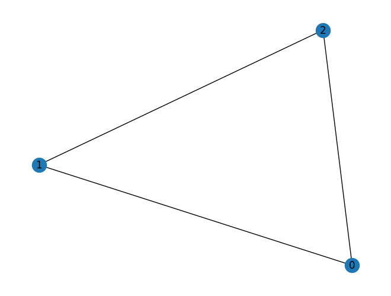
A3 = nx.adjacency_matrix(C3).todense()
eigvals, eigvecs = la.eig(A3)
int(np.round(np.sum(eigvals.real**3)/6,0))
1
Vamos calcular o número de triângulos no grafo completo com 7 vértices:
C7 = nx.complete_graph(7)
nx.draw(C7,with_labels=True)
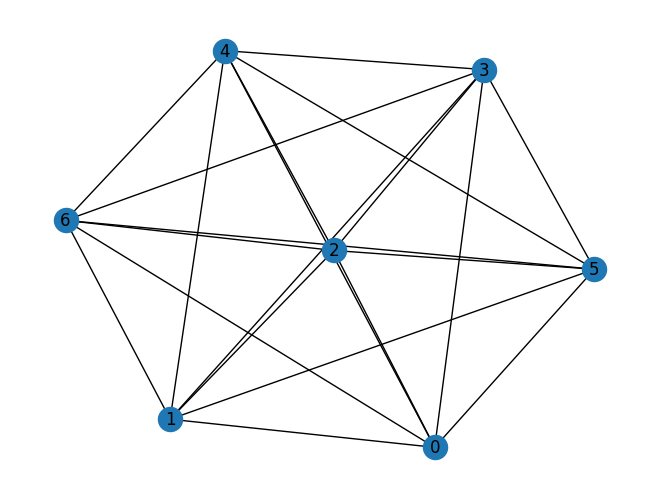
A7 = nx.adjacency_matrix(C7).todense()
eigvals, eigvecs = la.eig(A7)
int(np.round(np.sum(eigvals.real**3)/6,0))
35
Existem 35 triângulos no grafo completo com 7 vértices!
Vamos escrever uma função chamada triangles que recebe uma matriz quadrada M e retorna a soma
onde \(\lambda_i\) são os autovalores da matriz simétrica \(A = (M + M^T)/2\). Note que \(M = A\) se \(M\) for simétrica. O valor de retorno é o número de triângulos no grafo \(G\) se a entrada \(M\) for a matriz de adjacência.
def triangles(M):
A = (M + M.T)/2
eigvals, eigvecs = la.eig(A)
eigvals = eigvals.real
return int(np.round(np.sum(eigvals**3)/6,0))
A seguir, vamos tentar um grafo de Turan.
G = nx.turan_graph(10,5)
nx.draw(G,with_labels=True)
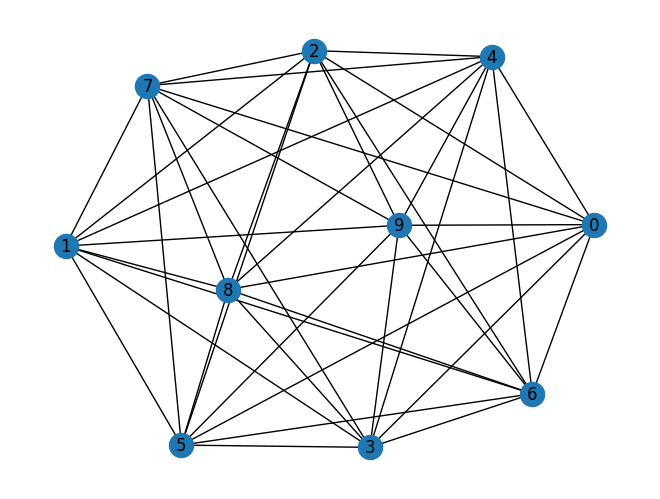
A = nx.adjacency_matrix(G).todense()
print(A)
[[0 0 1 1 1 1 1 1 1 1]
[0 0 1 1 1 1 1 1 1 1]
[1 1 0 0 1 1 1 1 1 1]
[1 1 0 0 1 1 1 1 1 1]
[1 1 1 1 0 0 1 1 1 1]
[1 1 1 1 0 0 1 1 1 1]
[1 1 1 1 1 1 0 0 1 1]
[1 1 1 1 1 1 0 0 1 1]
[1 1 1 1 1 1 1 1 0 0]
[1 1 1 1 1 1 1 1 0 0]]
Encontre o número de triângulos:
triangles(A)
80
Finalmente, vamos calcular o número de triângulos no grafo dodecaédrico:
G = nx.dodecahedral_graph()
nx.draw(G,with_labels=True)
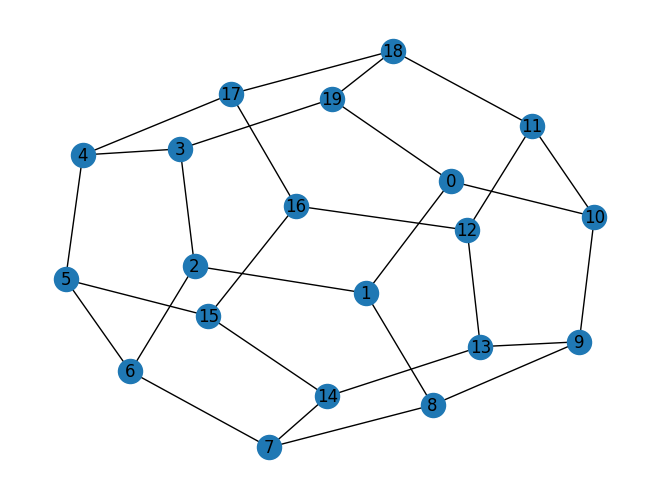
A = nx.adjacency_matrix(G).todense()
print(A)
[[0 1 0 0 0 0 0 0 0 0 1 0 0 0 0 0 0 0 0 1]
[1 0 1 0 0 0 0 0 1 0 0 0 0 0 0 0 0 0 0 0]
[0 1 0 1 0 0 1 0 0 0 0 0 0 0 0 0 0 0 0 0]
[0 0 1 0 1 0 0 0 0 0 0 0 0 0 0 0 0 0 0 1]
[0 0 0 1 0 1 0 0 0 0 0 0 0 0 0 0 0 1 0 0]
[0 0 0 0 1 0 1 0 0 0 0 0 0 0 0 1 0 0 0 0]
[0 0 1 0 0 1 0 1 0 0 0 0 0 0 0 0 0 0 0 0]
[0 0 0 0 0 0 1 0 1 0 0 0 0 0 1 0 0 0 0 0]
[0 1 0 0 0 0 0 1 0 1 0 0 0 0 0 0 0 0 0 0]
[0 0 0 0 0 0 0 0 1 0 1 0 0 1 0 0 0 0 0 0]
[1 0 0 0 0 0 0 0 0 1 0 1 0 0 0 0 0 0 0 0]
[0 0 0 0 0 0 0 0 0 0 1 0 1 0 0 0 0 0 1 0]
[0 0 0 0 0 0 0 0 0 0 0 1 0 1 0 0 1 0 0 0]
[0 0 0 0 0 0 0 0 0 1 0 0 1 0 1 0 0 0 0 0]
[0 0 0 0 0 0 0 1 0 0 0 0 0 1 0 1 0 0 0 0]
[0 0 0 0 0 1 0 0 0 0 0 0 0 0 1 0 1 0 0 0]
[0 0 0 0 0 0 0 0 0 0 0 0 1 0 0 1 0 1 0 0]
[0 0 0 0 1 0 0 0 0 0 0 0 0 0 0 0 1 0 1 0]
[0 0 0 0 0 0 0 0 0 0 0 1 0 0 0 0 0 1 0 1]
[1 0 0 1 0 0 0 0 0 0 0 0 0 0 0 0 0 0 1 0]]
np.round(triangles(A),2)
np.int64(0)